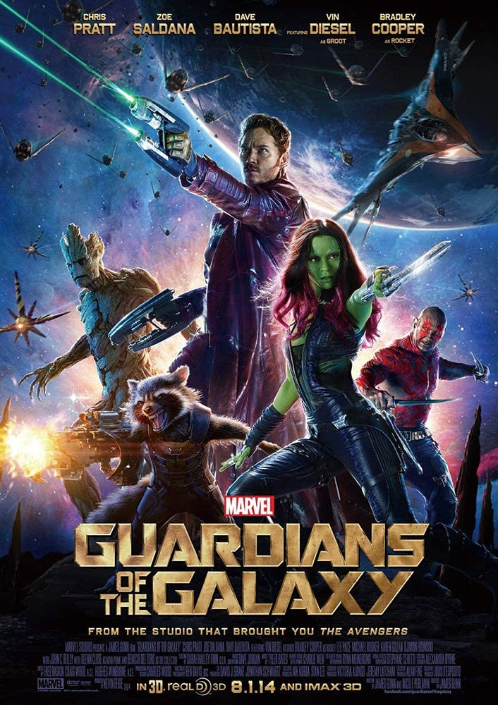

What planet is this?！
作曲：菅野よう子
収録：COWBOY BEBOP Knockin'on heaven's door O.S.T. FUTURE BLUES


原作：
COWBOY BEBOP 天国の扉
COWBOY BEBOP 天国の扉
開幕から疾走感溢れるこの曲をかけながらドライブをした日には
スピードが思わず出すぎてしまうッ…！そんな曲。
55秒目あたりから始まるサックスパートは必聴のカッコ良さです！
原作では主人公スパイクが戦闘機に乗ってチェイスするシーンで使用されました。
前述のチェイスシーンや格闘シーンなど全編通して作画、楽曲ともに素晴らしい作品なので
この曲に心地よさを感じた方は原作をご視聴されてはいかがでしょうか。
スピードが思わず出すぎてしまうッ…！そんな曲。
55秒目あたりから始まるサックスパートは必聴のカッコ良さです！
原作では主人公スパイクが戦闘機に乗ってチェイスするシーンで使用されました。
前述のチェイスシーンや格闘シーンなど全編通して作画、楽曲ともに素晴らしい作品なので
この曲に心地よさを感じた方は原作をご視聴されてはいかがでしょうか。
パシフィック・リム(feat.トム・モレロ)
作曲：ラミン・ジャバディ
収録：「パシフィック・リム」オリジナル・サウンドトラック
原作：
パシフィック・リム
パシフィック・リム
大きな課題との闘いが始まる直前あたりに聞くのがピッタリでギターがカッコイイ曲！
開始から徐々に演奏が豪華になり、1：40には曲のピークと共にテンションをぶち上げることができるかと！
原作では主人公の操る超巨大ロボットの起動、発進シーンやタンカーで敵をぶん殴るシーンといった
熱いシーンで使用されていました。Prime会員なら現在は無料で映画、サントラ共に視聴可能ですので、
特撮好きの方、ロボアニメ好きの方はご覧になられてはいかがでしょうか！
開始から徐々に演奏が豪華になり、1：40には曲のピークと共にテンションをぶち上げることができるかと！
原作では主人公の操る超巨大ロボットの起動、発進シーンやタンカーで敵をぶん殴るシーンといった
熱いシーンで使用されていました。Prime会員なら現在は無料で映画、サントラ共に視聴可能ですので、
特撮好きの方、ロボアニメ好きの方はご覧になられてはいかがでしょうか！
Come and Get Your Love
作詞作曲：ローリー・ヴァスケス・ヴェガス
収録：ガーディアンズ・オブ・ギャラクシー:オーサム・ミックス Vol.1


原作：
ガーディアンズ・オブ・ギャラクシー
ガーディアンズ・オブ・ギャラクシー
陽気なメロディが心地よい、散歩中に聞くと気分も晴れやかになれそうな曲です。
原作ではこの曲とともにクソデカい映画のタイトルが出るのですが、
曲の前振りの仕方といい、曲のかかった後の主人公の動きといい
個人的には映画史上トップクラスに秀逸なオープニングであるように思います。
映画の本編も笑いあり涙あり友情ありの非常に面白いものとなっておりますので、
興味の出た方は、ぜひご覧あれ～！
原作ではこの曲とともにクソデカい映画のタイトルが出るのですが、
曲の前振りの仕方といい、曲のかかった後の主人公の動きといい
個人的には映画史上トップクラスに秀逸なオープニングであるように思います。
映画の本編も笑いあり涙あり友情ありの非常に面白いものとなっておりますので、
興味の出た方は、ぜひご覧あれ～！